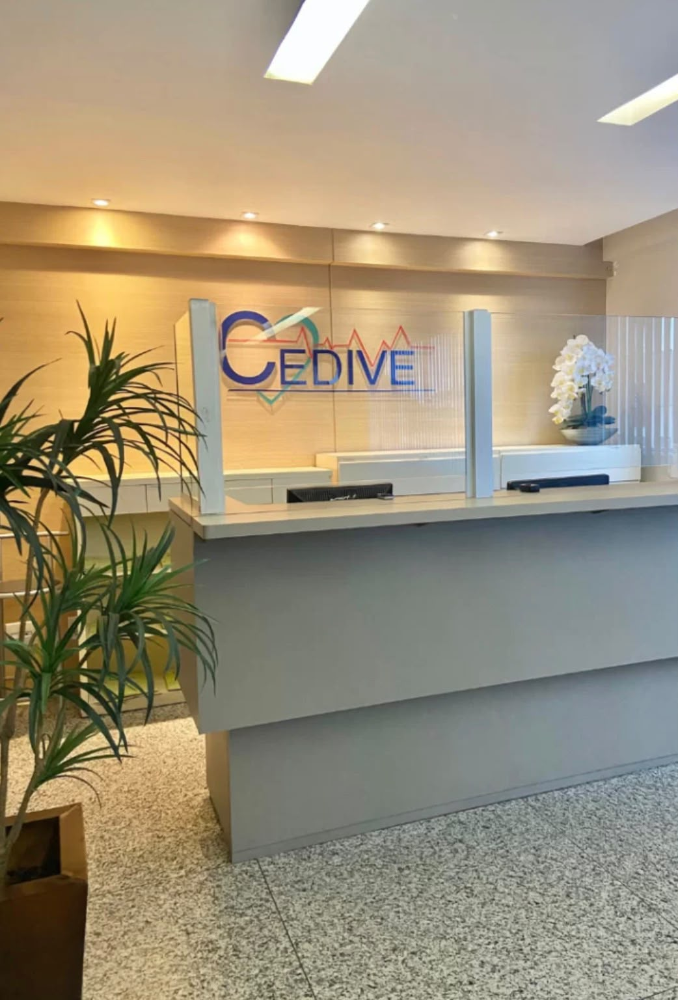
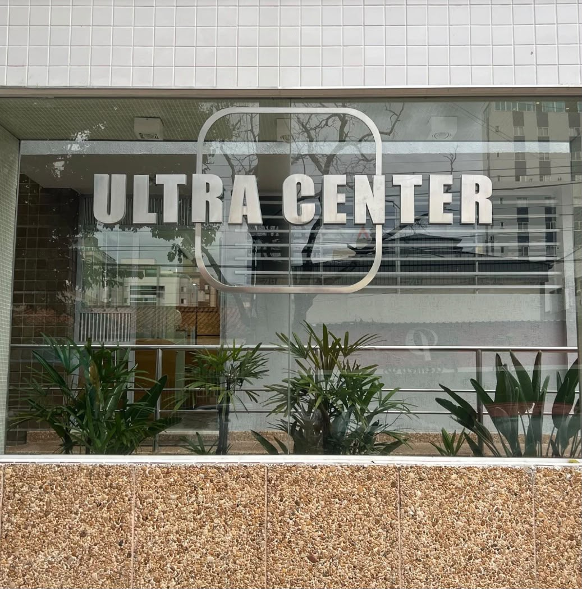
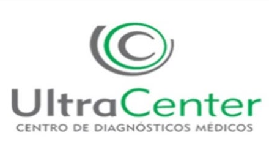

Exames de imagem
Ultrassonografia, Duplex Scan e Ecocardiograma. Mamografia Digital disponível na Cedive.
CUIDADO EM CADA DETALHE
Exames, consultas e cuidado integrado em diferentes regiões de Belo Horizonte. Escolha a unidade ideal para o seu atendimento.

CUIDADO INTEGRADO
Uma rede de atendimento com diferentes exames e consultas para acompanhar você em cada etapa do cuidado.
Consulte as opções disponíveis na unidade mais conveniente para você. A disponibilidade pode variar entre unidades.
Ver unidades ↗Ultrassonografia, Duplex Scan e Ecocardiograma. Mamografia Digital disponível na Cedive.
ECG, Holter, MAPA e Teste Ergométrico.
Biópsias, PAAF e exames laboratoriais.
Atendimento com médicos de diferentes especialidades e nutricionista.
UMA REDE, TRÊS EXPERIÊNCIAS
Encontre diferentes frentes de atendimento em endereços acessíveis de Belo Horizonte.

Da medicina diagnóstica à medicina regenerativa, conheça as unidades e escolha onde começar.
ONDE ESTAMOS
Entre em contato diretamente com a equipe da unidade para confirmar exames, consultas e agendamentos.
Exames de imagem, cardiológicos, laboratoriais e consultas.
R. Manaus, 623
Santa Efigênia · Belo Horizonte — MG
Exames de imagem, cardiológicos, laboratoriais e consultas.
R. Padre Pedro Pinto, 445 · 4º andar
Venda Nova · Belo Horizonte — MG
Espaço dedicado à medicina regenerativa.
R. Manaus, 623
Santa Efigênia · Belo Horizonte — MG
ANTES DE VIR
Fale com a unidade para confirmar informações sobre seu atendimento.
Encontrar contato ↗A rede oferece ultrassonografia, Duplex Scan, Ecocardiograma, exames cardiológicos, laboratoriais, biópsias e PAAF. A Cedive também realiza Mamografia Digital. Consulte a unidade para confirmar disponibilidade.
Selecione sua unidade acima e use o botão do WhatsApp para falar diretamente com a equipe.
A Mamografia Digital está listada entre os exames realizados na unidade Cedive, em Venda Nova. Confirme horários e orientações com a equipe antes de ir.
Ultra Center e Ultra Regen: de segunda a sexta, das 08h às 18h; sábado, das 08h às 12h. Cedive: de segunda a sexta, das 08h às 18h; sábado, das 08h às 12h.
